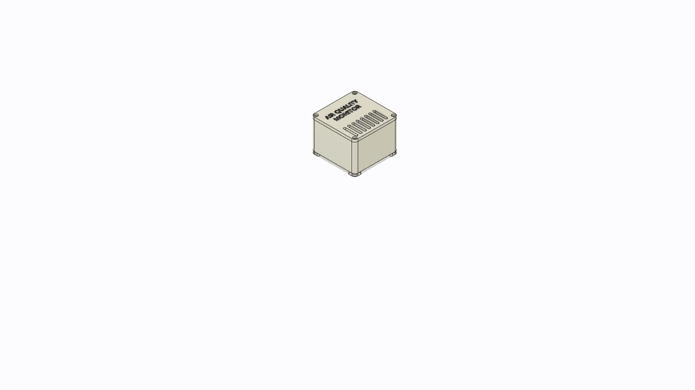

Air Quality Monitor
A custom designed and built indoor air quality monitoring system, now in its third generation. From a CircuitPython, MQTT, and Grafana stack to ESPHome and Home Assistant — with over a year of field data comparing the builds side by side.

The Generations


Every generation shares the same goal: understand the air in the home and track how it changes throughout the day. The write-ups below cover each build, and the Generation Comparison at the bottom lines all three up side by side — component pricing, capability, ease of build, and the field data comparing the two newest generations head to head.
Table of Contents
1. Generation 1 (Original)
Overview
Components
PMSA003I
SGP30
BME680
ESP32-S2
Miscellaneous
Bill of Materials
Programming
Case Design
Grafana
2. Generation 2
Overview
Components
Programming
Case Design
Bill of Materials
3. Generation 3
Overview
Components
Programming
Case Design
Initial Data
Bill of Materials
4. Generation Comparison
Component Pricing
Capability
Ease of Build
Field Data: AQM2 vs AQM3
Generation 1 (Original)
Overview
In this project, I designed, coded, and 3D printed an air quality monitor using an ESP32 microcontroller, along with the BME680, SGP30, and PMSA003I sensors. The goal of this project was to study the indoor air quality of my home and track how it changes during various activities.
Understanding the air quality in our living spaces is crucial for our health and well-being. By monitoring air quality, we can gain valuable insights into the effects of everyday activities, such as cooking or cleaning, on the air we breathe. This project allowed me to track trends and identify factors that impact indoor air quality, such as weather conditions and occupancy levels.
The BME680 sensor played a central role in this project, as it measures temperature, pressure, humidity, and volatile organic compounds (VOCs). Additionally, the SGP30 sensor provided data on total volatile organic compounds (TVOC) and equivalent CO2 (eCO2) levels. The PMSA003I sensor focused on particulate matter, providing counts and concentrations for PM1.0, PM2.5, and PM10.0 particles.
To collect data from each sensor, I developed CircuitPython code to interface with the ESP32 microcontroller. The code facilitated communication with an MQTT broker over WiFi and stored the collected data in a database. To visualize and analyze the data, I used Grafana, a powerful data visualization tool. To house all the components, I designed a custom 3D-printed case using CAD software.
By designing, coding, and 3D printing my own air quality monitor, I was able to gain valuable insights into the indoor air quality of my home. This project allowed me to track trends, identify potential air quality issues, and make informed decisions to create a healthier living environment.
Components
PMSA003I
 The PMSA003I particulate matter sensor, manufactured by Plantower, plays a crucial role in measuring air quality by detecting and quantifying the concentration of fine particles in the atmosphere. This sensor employs a laser-based scattering technique to measure particle size and provide real-time data on particulate matter levels, particularly focusing on PM1.0, PM2.5, and PM10.
The PMSA003I particulate matter sensor, manufactured by Plantower, plays a crucial role in measuring air quality by detecting and quantifying the concentration of fine particles in the atmosphere. This sensor employs a laser-based scattering technique to measure particle size and provide real-time data on particulate matter levels, particularly focusing on PM1.0, PM2.5, and PM10.
By accurately measuring particle size, the PMSA003I enables the assessment of potential health risks associated with airborne particles - perfect for this project. Fine particles, such as PM2.5, can pose significant health hazards as they can penetrate deep into the respiratory system. Therefore, the sensor's ability to monitor these smaller particles helps in understanding the potential impact on human health in indoor environments.
Additionally, the particulate matter concentration data provided by the PMSA003I is invaluable for evaluating overall air quality. High concentrations of particulate matter can indicate the presence of indoor pollution sources, inadequate ventilation, or the infiltration of outdoor pollutants. By continuously monitoring particulate matter levels, the sensor enables timely detection of air quality issues, facilitating appropriate mitigation measures and interventions to improve indoor environments.
The PMSA003I particulate matter sensor is designed for integration into air quality monitoring systems, enabling easy data acquisition and analysis. This model by Adafruit features I2C via STEMMA QT, allowing seamless connectivity with microcontrollers or other devices. We will be using this connector to integrate all of the sensors in this build
Note: after years of service, the PMSA003I on this first-generation monitor has finally failed. It now reports a high and mostly constant reading of roughly 208 µg/m³ — the classic signature of a dead laser-scattering sensor. You can see it pinned flat next to the newer generations in the field data charts below. Everything else on Generation 1 still works, but its particulate data should be treated as retired.
SGP30/40
 The Adafruit SGP30 is an air quality sensor that plays a crucial role in measuring and assessing indoor air quality. While it does not directly measure CO2 levels, it provides an estimation of equivalent carbon dioxide (eCO2) based on VOC (volatile organic compound) levels.
The Adafruit SGP30 is an air quality sensor that plays a crucial role in measuring and assessing indoor air quality. While it does not directly measure CO2 levels, it provides an estimation of equivalent carbon dioxide (eCO2) based on VOC (volatile organic compound) levels.
It is important to note that the Adafruit SGP30 does not directly measure carbon dioxide (CO2) levels. If accurate CO2 measurements are required, specialized sensors designed specifically for CO2 detection could replace this one, but those senors are quite expensive. However, for this application, the estimation of eCO2 provided by the SGP30 is sufficient for assessing general air quality and detecting changes in VOC levels.
In addition to eCO2, the Adafruit SGP30 also measures Total Volatile Organic Compounds (TVOCs). TVOCs encompass a wide range of organic compounds present in the air, including pollutants and odorous substances, which is vital information to determine the quality of the air.
The calibration for this sensor is crucial, as it needs at least 12 hours to acquire baseline measurements of eCO2 and TVOC before it can accurately read data from the environment. In the GitHub repository, I have attached the calibration code I used to obtain the baseline measurements.
BME680
 The Adafruit BME680 is a highly valuable sensor for measuring air quality (IAQ) as it provides comprehensive data on multiple environmental parameters, including temperature, humidity, pressure, and volatile organic compounds (VOCs).
The Adafruit BME680 is a highly valuable sensor for measuring air quality (IAQ) as it provides comprehensive data on multiple environmental parameters, including temperature, humidity, pressure, and volatile organic compounds (VOCs).
One of the key benefits of the BME680 is its ability to measure temperature and humidity accurately. These readings are crucial for understanding the impact of environmental conditions on air quality. Temperature and humidity can affect the behavior of pollutants, chemical reactions, and the overall comfort of indoor spaces. By monitoring these parameters, the BME680 helps identify potential issues such as high humidity levels that may promote mold growth or temperature fluctuations that affect occupant comfort.
In addition to temperature and humidity, the BME680 measures VOCs, which are emitted by various sources and can impact air quality. However, it's important to note that the BME680's VOC readings may not be as precise as those from specialized VOC sensors like the SGP30. Currently the Bosch BSEC2 library is not available in CircuitPython, which is required to calculate IAQ, so the VOC function is not very useful.
To obtain more accurate VOC measurements, the BME680's temperature and humidity readings can be used in combination with the Adafruit SGP30 air quality sensor. By feeding the temperature and humidity data from the BME680 into the SGP30, the VOC readings can be compensated and calibrated for improved accuracy. This allows for a more reliable assessment of air quality, taking into account the influence of environmental conditions.
ESP32-S2
 The Adafruit ESP32-S2 Feather is a versatile microcontroller designed for IoT projects. It features a STEMMA QT connector for I2C devices, WiFi capabilities, and flexible battery options.
The STEMMA QT connector allows for easy integration of I2C sensors and devices, expanding the microcontroller's capabilities, perfect for connecting the sensors above.
The ESP32-S2 Feather supports 2.4 GHz Wi-Fi connectivity, enabling seamless integration with networks and internet services, including MQTT.
The microcontroller offers USB Type-C and Lipoly battery support, with built-in charging circuitry and active battery monitoring.
The Adafruit ESP32-S2 Feather is a versatile microcontroller designed for IoT projects. It features a STEMMA QT connector for I2C devices, WiFi capabilities, and flexible battery options.
The STEMMA QT connector allows for easy integration of I2C sensors and devices, expanding the microcontroller's capabilities, perfect for connecting the sensors above.
The ESP32-S2 Feather supports 2.4 GHz Wi-Fi connectivity, enabling seamless integration with networks and internet services, including MQTT.
The microcontroller offers USB Type-C and Lipoly battery support, with built-in charging circuitry and active battery monitoring.
Miscellaneous
I have compiled a list below with other required hardware to create this build. I purchased some of the STEMMA QT connectors from adafruit, some PC-PETG filament from overture, and M2 hardware to assemble the rest of the case and overall build.
If I were to start this project over, and perhaps for the next iteration, I would have used an SCD40 true CO2 sensor as well as a SEN55 to encompass the entire project written in C++. This setup simplifies the amount of sensors dramatically, as well as the cost. Due to stock availability at the time of producing this project as well as not having acces to a soldering iron, I was unable to persue this avenue. I might create an addendum in the future with this hardware arrangement, however.
Bill of Materials (BOM)
| Name | Description | Quantity | Price |
|---|---|---|---|
| ESP32-S2 Feather | ESP32-S2 Feather with STEMMA QT / Qwiic - 8MB Flash No PSRAM | 1 | $18.00 |
| PMSA003I | PM1.0, PM2.5 and PM10.0 concentration in both standard & environmental units | 1 | $45.00 |
| SGP30 | SGP30 Multi-Pixel Gas Sensor, a fully integrated MOX gas sensor | 1 | $18.00 |
| BME680 | temperature, humidity, barometric pressure, and VOC gas sensor | 1 | $19.00 |
| 50mm Long STEMMA Cable | 4-wire cable 50mm long and fitted with JST SH female 4-pin connectors on both ends | 3 | $1.00 |
| PC-PETG Filament | PETG and Polycarbonate mix of 1.75mm 3D Printing filament | 1 | $24.00 |
| Metric M2 Hardware Set | High Quality Stainless Steel 304 Phillips Pan Head Bolts Screws Nuts Flat Washers Kit | 1 | $10.00 |
| $137.00 | |||
Programming
Initial Testing
 After obtaining all of the necessary parts, I was able to test the functionality of all the components. I originally wanted to use the Arduino IDE to program in C++ as it was what I was familiar with from my other projects. However, my testing with all of the microcontrollers I had purchased from Adafruit would not upload arduino sketches reliably for testing. I narrowed it down to the serial commands in the setup part of the sketch causing the microcontroller to hang, but after many hours of tinkering I decided to use CircuitPython. While I had worked with traditional Python, CircuitPython was familiar in some aspects, and I was able to get started relatively easily after some research. The only functionality I sacrificed using CircuitPython was the Bosch BSEC2 library for calculating the Indoor Air Quality (IAQ) Index. The source code is not open source, so I was unable to compile a version for CircuitPython, although I tried.
After obtaining all of the necessary parts, I was able to test the functionality of all the components. I originally wanted to use the Arduino IDE to program in C++ as it was what I was familiar with from my other projects. However, my testing with all of the microcontrollers I had purchased from Adafruit would not upload arduino sketches reliably for testing. I narrowed it down to the serial commands in the setup part of the sketch causing the microcontroller to hang, but after many hours of tinkering I decided to use CircuitPython. While I had worked with traditional Python, CircuitPython was familiar in some aspects, and I was able to get started relatively easily after some research. The only functionality I sacrificed using CircuitPython was the Bosch BSEC2 library for calculating the Indoor Air Quality (IAQ) Index. The source code is not open source, so I was unable to compile a version for CircuitPython, although I tried.
Regardless, I imported all of the necessary libraries and hooked up all of the sensors to the ESP32-S2 via the STEMMA ports. Perhaps in a future project I will attempt creating my own circuit board, but the STEMMA ports provided an easy route for quickly prototyping sensors over I2C. A simple Python script verified all of the sensors were working and I was getting logical readouts on the serial connection. I used the Mu editor to program the controller and debug through the serial port.
From there, I attempted to connect the microcontroller to the internet and connect to an MQTT broker on my home server. I used Mosquitto MQTT via Node-RED to send a JSON file with the sensor data, battery voltage, and other metrics for debugging. I had some initial trouble getting Node-RED to parse the data coming in as a JSON. My biggest hurdle to overcome regarding this was to ensure the variable names in the JSON aligned with the message payload for the Node-RED parser. After that, Node-RED sends the message payload to an influxDB database I set up on the same Raspberry Pi for safe-keeping.
For the final piece of the puzzle, I used grafana installed on a docker container to query the data from the InfluxDB database. I made a dashboard with multiple graphs to track each sensors data with relevant data grouped together for more convenient analysis.
Additional Programming Information

As stated above, I wanted to utilize the Bosh BSEC2 library. I found some information about compiling the BSEC library for CircuitPython, but I was unable to get it working. The versions I could compile no longer existed. As for right now the MOX sensor on the BME680 reads the raw resistance of the sensor. It is still useful for showing the trends as a lower resistance infers more VOCs present and vice versa.
I also tried to lengthen the life of this project and keep it powered off of a battery with intermittent charging. In retrospect, that was never going to work. The PMSA003I pulls up to 100 mA while it is measuring (per its datasheet), on top of the rest of the system, and the SGP30 needs over a minute awake to warm up before it will give a reliable reading. Deep sleep simply was not worth it: every wakeup meant burning more than a minute of battery just to throw the first readings away. The PMSA003I also only has an 8000 hour duty cycle, or about a year's worth of 24/7 operation. Since the monitor sits in one place and never needed to be battery powered anyway, I gave up on the battery and ran the sensor continuously off of the USB connection to assess the stability of the system (microcontroller, code, MQTT broker, and InfluxDB database) instead of trying to optimize the sensor's life. Every sensor I have built since is wired straight to the USB-C port for power.
Also, by putting the microcontroller to sleep, the data displayed on Grafana was patchy and inconsistent due to needing to throw away minutes of data on each startup due to the sensors needing ample time to reach steady-state. I wanted clean graphs for my analysis, so I decided for the first iteration of this project to see how far this setup wpuld take me. The next iteration will use the two sensors i mentioned previously for a more optimized long term solution.
Case Design

I wanted to keep the case design as minimal as possible. For me, the most practical solution to a problem is through simplicity. I wanted to keep the case as small as possible because it sits on my desk in my workspace. I initially found it a little tricky to lay out all of the parts in CAD with only reference dimensions to go off of. Luckily, Adafruit has STEP files of all of their products, so I was able to manipulate the sesnors in CAD fairly easily. I also took into consideration that all of the sensors need adequate access to the envirnment. I made slots in the side of the case to allow the PMSA003I to draw air in and exhaust it. I also created vent holes through the bottom of the case and lid to allow for passive airflow with the sensors mounted vertically.
Mounting both the BME680 and SGP30 vertically seemed like the most optimal configuration as the product data sheet warmed that dust and particles landing on these sensors could interfere with accurate sensor measurements. I installed a removable slotted wall in the middle of the case bisecting the PMSA003I and ESP32-S2 from the BME680 and SGP30. I wanted to isolate these two components as heat from the ESP32 could result in higher read temperatures from the BME680, and the SGP30 eCO2 and TVOC calculations are base doff the real-time temperature and humidity readings in the code. My forethought payed off, and the readings seem consistent outside of the case and inside.
Grafana
Back when Generation 1 was the only monitor in the house, its dashboards lived in Grafana on the home server. I used to keep some public snapshots embedded here, but those are stale now, and the current analysis of the data lives in the field data section below, where all three generations get compared head to head. I can also dig up data from when the original PMSA003I was still fully functioning and add it there as well.
Generation 2
Overview
Generation 1 taught me a lot about what actually matters in an indoor air monitor. The SGP30's eCO2 estimate was neat, but at the end of the day it was still a guess. The PMSA003I had an 8000 hour duty cycle hanging over its head. And the whole Mosquitto, Node-RED, InfluxDB, Grafana pipeline on the Raspberry Pi was a lot of babysitting for one little sensor. So when I sat down to design the second generation, I went right back to the wishlist I had written at the end of the first write-up: a true CO2 sensor, a Sensirion SEN environmental node, and real C++ instead of CircuitPython. Generation 2 checks every box.
At the center of this build is the SEN55, which handles particulate matter along with VOC and NOx indices, temperature, and humidity. Next to it sits an SCD41 for a genuine CO2 measurement. Both hang off of a Seeed Studio XIAO ESP32-C6 — a five dollar microcontroller — programmed with ESPHome and reporting straight into Home Assistant. No broker, no database server, no separate dashboard container. Just the sensor, the board, and Home Assistant.
Components
SEN55
 I picked the SEN55 from Sensirion to be the heart of this build. In one package it measures particulate matter in four size bins (PM1.0, PM2.5, PM4, and PM10), a VOC index, a NOx index, temperature, and humidity, all over I2C. Per the datasheet it holds a ±10% accuracy on the particulate mass concentrations, ±0.45 °C on temperature, ±4.5 %RH on humidity, and a rated lifetime of more than ten years — which is a whole lot more reassuring than the first generation's 8000 hour sensor. The integrated fan keeps room air moving across the laser optics, and the sensor runs automatic cleaning routines so the readings stay honest over the long haul.
I picked the SEN55 from Sensirion to be the heart of this build. In one package it measures particulate matter in four size bins (PM1.0, PM2.5, PM4, and PM10), a VOC index, a NOx index, temperature, and humidity, all over I2C. Per the datasheet it holds a ±10% accuracy on the particulate mass concentrations, ±0.45 °C on temperature, ±4.5 %RH on humidity, and a rated lifetime of more than ten years — which is a whole lot more reassuring than the first generation's 8000 hour sensor. The integrated fan keeps room air moving across the laser optics, and the sensor runs automatic cleaning routines so the readings stay honest over the long haul.
Mounting matters with this sensor. I spent time with the SEN5x datasheet and Sensirion's engineering guidelines to work out the optimal orientation and position so that the fan inlet and outlet both have an unobstructed path to room air, and the official STEP file made it easy to build the case around the exact envelope of the module.
SCD41
The SCD41 is the true CO2 sensor I wished for in the first generation's write-up. It uses a photoacoustic NDIR principle to actually measure carbon dioxide instead of estimating it off of VOC readings, with an accuracy of ±(40 ppm + 5% of the reading) over a 400 to 5000 ppm range per the datasheet. It also has its own temperature and humidity sensors built right in, so I ended up with a second reference for those channels basically for free. I left automatic self-calibration enabled: the sensor assumes the lowest CO2 reading it sees over the course of about a week is fresh outdoor air and quietly re-zeroes itself to it, which keeps the whole thing honest without me ever touching it.
Seeed Studio XIAO ESP32-C6
 For the brain of the operation, I went with the Seeed Studio XIAO ESP32-C6. For five dollars you get an ESP32-C6 with 2.4 GHz WiFi and a USB-C port — compare that to the eighteen dollar Feather in Generation 1 and the microcontroller became one of the cheapest parts of the whole build. There is plenty of headroom on it for a sensor loop, and it sips power compared to the old board.
For the brain of the operation, I went with the Seeed Studio XIAO ESP32-C6. For five dollars you get an ESP32-C6 with 2.4 GHz WiFi and a USB-C port — compare that to the eighteen dollar Feather in Generation 1 and the microcontroller became one of the cheapest parts of the whole build. There is plenty of headroom on it for a sensor loop, and it sips power compared to the old board.
Assembly took very limited soldering. A small SEN55 adapter breakout converts the sensor's tiny 1.0 mm JST connector to the STEMMA QT standard, and on the other end I soldered the small JST STEMMA connector to the XIAO to adapt it to the I2C bus. A couple of short STEMMA QT cables chain the SEN55, the SCD41, and the XIAO together. The whole monitor is powered from the XIAO's USB-C port.
Programming
After the CircuitPython detour of the first generation, I wanted the firmware for this build to be boring. ESPHome delivers exactly that. The entire configuration lives in a single YAML file: the SEN5x and SCD4x sensor platforms are built into ESPHome, so I never wrote a line of sensor driver code. I simply declared the sensors, gave them names, and set the update interval to 300 seconds.
Moving to Home Assistant was about more than just this one sensor, though. I was adding a whole suite of sensors around the house, and I wanted everything reporting to one place. ESPHome lets me build my own sensors and have them show up in Home Assistant without having to manage an entire stack of brokers, databases, and dashboard containers the way Generation 1 did. It is just Home Assistant now, and every device I add after this one gets the same treatment for free. Over-the-air updates, a fallback captive portal, and the encrypted Home Assistant API all come with the framework too.
The VOC and NOx indices needed a little tuning to behave. The VOC algorithm has learning windows, a gating duration, and a gain factor that control how fast the index adapts to the environment, and I settled on values that keep the index stable in a quiet house while still responding to actual events like cooking or cleaning.
Case Design


The Generation 2 case was designed in CAD around the STEP models of both sensors. The whole package measures 150 x 60 x 30 mm — a slim little box that keeps the fan inlet and exhaust of the SEN55 open to room air while the electronics stay tucked away inside. The case is printed in three pieces: a body, a top, and a bottom, held together with heat-set inserts and M3 hardware. The vents in the case give the temperature, humidity, and CO2 sensors plenty of passive airflow so they track the room instead of the inside of a box.
The full model is available to view interactively right in the browser, along with the files used to print it:
Bill of Materials (BOM)
| Name | Description | Quantity | Price |
|---|---|---|---|
| SEN55-SDN-T | Air quality sensor with I2C output from Sensirion | 1 | $30.00 |
| SCD41 | True CO2, temperature, and humidity sensor with I2C output | 1 | $50.00 |
| Seeed Studio XIAO ESP32-C6 | Microcontroller | 1 | $5.00 |
| SEN55 Adapter Breakout | Adapts the SEN55 connections to I2C via STEMMA QT / Qwiic | 1 | $4.50 |
| STEMMA QT / Qwiic JST SH 4-pin Cable | Connector cable | 2 | $1.00 |
| $91.50 | |||
Generation 3
Overview
Generation 3 is what happens when a year of data tells you exactly which measurements you actually use. The SEN66 folds everything I needed two separate sensors for in Generation 2 into a single module: particulate matter, VOC and NOx indices, temperature, humidity, and now a true CO2 measurement built right in. The entire bill of materials collapsed down to two line items — one sensor and one microcontroller.
It did not just get simpler, it got faster. The update interval on this one is set to 15 seconds, so the readings come in quick enough to watch things happen in real time — open a window, cook dinner, or run the vacuum and the effect shows up in Home Assistant within seconds. I also skipped the adapter breakout this time around and soldered the SEN66's wires straight to the XIAO, which knocked another line item off the BOM and made the whole package that much smaller. This is the build that has been running day in and day out for well over a year now.
Components
SEN66
 The SEN66 is the all-in-one evolution of the SEN5x line. Everything the SEN55 does — PM1.0, PM2.5, PM4, PM10, VOC, NOx, temperature, and humidity — plus an integrated CO2 sensor in the same package. The SEN6x datasheet carries over the same claims as the SEN5x family: ±10% on the particulate mass concentrations, ±0.45 °C on temperature, ±4.5 %RH on humidity, a ten year plus lifetime, and the added CO2 measurement is rated at ±(30 ppm + 3% of the reading). No breakout boards, no sensor daisy chaining, no second I2C address to keep track of. One sensor, four wires, done.
The SEN66 is the all-in-one evolution of the SEN5x line. Everything the SEN55 does — PM1.0, PM2.5, PM4, PM10, VOC, NOx, temperature, and humidity — plus an integrated CO2 sensor in the same package. The SEN6x datasheet carries over the same claims as the SEN5x family: ±10% on the particulate mass concentrations, ±0.45 °C on temperature, ±4.5 %RH on humidity, a ten year plus lifetime, and the added CO2 measurement is rated at ±(30 ppm + 3% of the reading). No breakout boards, no sensor daisy chaining, no second I2C address to keep track of. One sensor, four wires, done.
Just like with the SEN55, I leaned on the SEN6x datasheet and the official STEP file to work out the mounting orientation and design the enclosure around the exact outline of the module.
Seeed Studio XIAO ESP32-C6
The same five dollar XIAO ESP32-C6 from Generation 2 carries over unchanged. It has more than enough horsepower for a 15 second sensor loop, and keeping the microcontroller identical between generations meant the firmware and the tooling carried over too.
Programming
The firmware is ESPHome again, and it is even shorter this time. The sen6x platform with the SEN66 type declares every channel the sensor offers in one block — PM, NOx, CO2, temperature, humidity, and VOC — and the update interval is set to 15 seconds. The XIAO's i2c bus, the Home Assistant API, over-the-air updates, and the captive portal fallback are all straight from the same configuration pattern as Generation 2.
Case Design


The Generation 3 case is the simplest of the three. With only one sensor and one board inside, the enclosure reduces to a body with a small retainer that pins the XIAO in place, held together with heat-set inserts and M3 hardware — and at roughly 75 x 46 x 61 mm, it is considerably more compact than the Generation 2 box, since a single integrated sensor leaves far less to house. The case does not need the vent holes the earlier generation relied on either, because everything is housed inside the SEN66 module itself. The model files are available below, viewable in 3D right in the browser:
Initial Data
When the SEN66 first went online, I put together an initial data report with the first readings, 3D renders of the enclosure, and photos of the finished build. A few pages from that report are below, and the full document is available as a PDF:


Bill of Materials (BOM)
| Name | Description | Quantity | Price |
|---|---|---|---|
| SEN66-SIN-T | All-in-one air quality sensor with I2C output from Sensirion | 1 | $59.00 |
| Seeed Studio XIAO ESP32-C6 | Microcontroller | 1 | $5.00 |
| $64.00 | |||
Generation Comparison


All three generations, side by side. Each iteration removed parts, added capability, and moved more of the complexity into software — which is exactly the direction a project like this should move.
Component Pricing
| Component Role | Generation 1 | Generation 2 | Generation 3 |
|---|---|---|---|
| Microcontroller | ESP32-S2 Feather — $18.00 | XIAO ESP32-C6 — $5.00 | XIAO ESP32-C6 — $5.00 |
| Particulate matter | PMSA003I — $45.00 | SEN55 — $30.00 | SEN66 — $59.00 (includes everything below) |
| CO2 | SGP30 eCO2 estimate — $18.00 | SCD41 true CO2 — $50.00 | Integrated true CO2 — included |
| VOC / temp / humidity | BME680 — $19.00 | Included in SEN55 + SCD41 | Integrated — included |
| Connectors, case & hardware | $3.00 cables, $24.00 filament, $10.00 M2 hardware | $4.50 adapter, $2.00 cables | — |
| Total | $137.00 | $91.50 | $64.00 |
Capability
| Capability | Generation 1 | Generation 2 | Generation 3 |
|---|---|---|---|
| Particulate matter | PM1.0 / PM2.5 / PM10 (PMSA003I — now failed) | PM1.0 / PM2.5 / PM4 / PM10 (SEN55) | PM1.0 / PM2.5 / PM4 / PM10 (SEN66) |
| CO2 | eCO2 estimate from VOC (SGP30) | True CO2 (SCD41) | True CO2 (integrated) |
| VOC | Raw MOX resistance + SGP30 TVOC | VOC index + NOx index | VOC index + NOx index |
| Temperature / humidity | BME680 | SEN55 + SCD41 (two sources) | SEN66 |
| Update rate | Continuous with sleep-mode issues | 5 minutes | 15 seconds |
| Platform | CircuitPython → MQTT → InfluxDB → Grafana | ESPHome → Home Assistant | ESPHome → Home Assistant |
Ease of Build
| Aspect | Generation 1 | Generation 2 | Generation 3 |
|---|---|---|---|
| Soldering | None (all STEMMA QT) | Limited — soldered the JST STEMMA connector to the XIAO to adapt to I2C | Yes — SEN66 wired straight to the XIAO (drops the adapter board from the BOM) |
| Power | Battery experiments abandoned — the PM sensor draw made deep sleep impractical, so it ran from USB | USB-C port on the XIAO | USB-C port on the XIAO |
| Firmware | CircuitPython, custom drivers, calibration code | ESPHome YAML, no driver code | ESPHome YAML, even less of it |
| Server stack | Mosquitto + Node-RED + InfluxDB + Docker + Grafana on a Raspberry Pi | Home Assistant only | Home Assistant only |
| Case | Custom 3D print, multi-piece with hardware | Custom 3D print, three pieces | Custom 3D print, body + retainer |
Field Data: AQM2 vs AQM3
With both newer generations reporting into Home Assistant, I can finally answer the question this whole project has been building toward: do the builds agree with each other? The charts below compare Generation 2 (SEN55 + SCD41) against Generation 3 (SEN66) over the same history exported from Home Assistant.
Two things to keep in mind when reading them. First, the monitors do not live in the same room, so they are not measuring identical air — some scatter is expected simply from placement. Second, you can actually see the air conditioning cycle in the temperature data, with a daily swing of roughly 3 to 4 °F as the system turns on and off. Both devices have been running like this for well over a year without issue.
Even with those caveats, the agreement is excellent:
| Channel | Paired points | Mean difference | Typical spread (±1 std) | RMSE | Correlation |
|---|---|---|---|---|---|
| Temperature | 257 | 0.00 °F | ±1.05 °F | 1.04 °F | 0.75 |
| CO2 | 257 | −22.3 ppm (SCD41 reads lower) | ±26.6 ppm | 34.6 ppm | 0.89 |
| VOC index | 257 | −2.0 | ±27.2 | 27.2 | 0.92 |
| Humidity | 284 | +3.5 %RH (SEN55 reads higher) | ±1.10 %RH | 3.71 %RH | 0.85 |
Temperature agrees to within 0.002 °F on average across 257 hours of data — the two sensors are effectively measuring the same house. CO2 tracks beautifully with a correlation of 0.89, with the SCD41 reading a consistent 22 ppm lower than the SEN66. The VOC indices move together with a correlation of 0.92. Humidity carries a small offset of about 3.5 %RH but tracks the same ups and downs. For two different sensor families in two different rooms, that is a very strong endorsement of both.
It is also worth checking these numbers against what the manufacturers actually promise. The SEN5x and SEN6x datasheets and the SCD4x datasheet spell out the accuracy of every channel, and the observed differences between the two builds land well inside the combined tolerances:
| Channel | Observed difference | Claimed accuracy per sensor | Combined worst case | Within spec? |
|---|---|---|---|---|
| Temperature | 0.00 °F mean, ±1.05 °F spread | ±0.45 °C (±0.81 °F) | ±1.62 °F | Yes |
| CO2 | −22.3 ppm mean, ±26.6 ppm spread | SCD41: ±(40 ppm + 5% of reading) ≈ 68 ppm at 560 ppm SEN66: ±(30 ppm + 3% of reading) ≈ 47 ppm at 580 ppm |
≈ ±115 ppm | Yes |
| Humidity | +3.5 %RH mean, ±1.10 %RH spread | ±4.5 %RH each | ±9 %RH | Yes |
| VOC index | r = 0.92 | Relative index (1–500), no absolute accuracy claim | — | Strong tracking |
Temperature — hourly, Oct 1–11
CO2 — hourly, Oct 1–11
VOC index — hourly, Oct 1–11
Humidity — 5 minute, Oct 10–11
PM1.0 — 5 minute, Oct 10–11
PM2.5 — 5 minute, Oct 10–11
PM4 — 5 minute, Oct 10–11
PM10 — 5 minute, Oct 10–11
The particulate charts above are the most telling of the bunch. They show every size bin the sensors report, all three generations in the same 25 hour window. Generation 1's PMSA003I — dead after years of service — sits pinned at roughly 208 µg/m³ on PM2.5 and PM10, high and mostly constant, exactly what a failed laser-scattering sensor looks like. Meanwhile the SEN55 and the SEN66 report clean indoor air in the same window, usually under a few µg/m³. Note that Generation 1 never had a PM4 channel (the PMSA003I only measured three bins), so that chart shows just the two newer generations. It is a perfect illustration of why the newer builds moved to the SEN family in the first place, and it is the chart that officially retires Generation 1's particulate data.